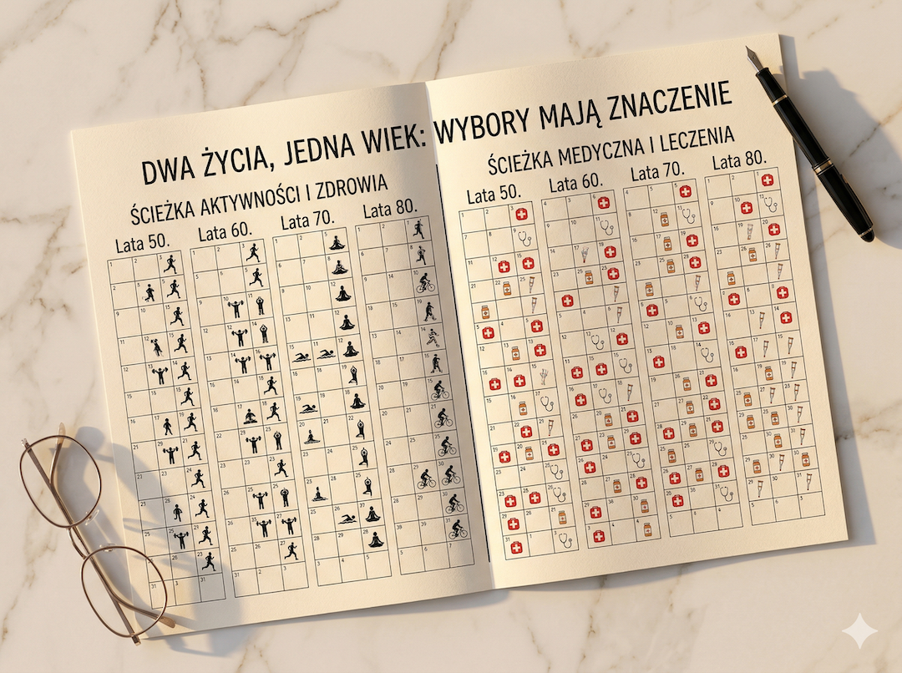

Wiem, że tytuł brzmi brutalnie. Taki był zamiar. Bo w tym jednym zdaniu jest coś, o czym prawie nikt nie mówi wprost: to, jak będzie wyglądało Twoje ostatnie 10–20 lat życia, w dużej mierze decydujesz teraz. Nie kiedy będziesz mieć 70 lat. Teraz. I to jest najlepsza wiadomość w tym artykule — bo skoro decydujesz teraz, to znaczy że masz jeszcze wybór.
Dwa słowa, które zmieniają wszystko: lifespan i healthspan
Lifespan to długość życia — ile lat przeżyjesz. Healthspan to długość zdrowia — ile z tych lat przeżyjesz w pełnej sprawności. I to jest różnica, która zmienia wszystko. Raport JAMA Network Open (2024), analizujący dane ze 183 krajów, potwierdza niepokojący fakt: mimo że żyjemy dłużej, healthspan nie rośnie równomiernie z lifespan. Coraz większy kawałek naszego życia spędzamy w stanie choroby lub niepełnej sprawności.
W krajach o wysokim dochodzie średnio 16–20% życia upływa w stanie niesprawności lub choroby. Przy osiemdziesięciu latach życia to 13–16 lat. Średni healthspan w USA wynosi 66,1 roku — przy długości życia 77–85 lat. Różnica to nawet 19 lat. Pytanie nie brzmi więc: ile lat przeżyjesz? Pytanie brzmi: ile z tych lat spędzisz będąc naprawdę sobą?
Ciekawostka: Badanie z Lancet eClinicalMedicine (2026) pokazuje, że zaledwie 24 minuty więcej snu dziennie, 3,7 minuty więcej umiarkowanego ruchu i niewielka poprawa diety dają przeciętnie 4 dodatkowe lata życia bez głównych chorób. Nie zmiany radykalne. Skromne i konsekwentne.
Dane w skrócie
16–20% życia — tyle przeciętny człowiek w bogatym kraju spędza w stanie niesprawności lub choroby. Przy 80 latach życia to 13–16 lat. Średni healthspan w USA: 66,1 roku przy długości życia 77–85 lat. Różnica: nawet 19 lat.
Źródło: JAMA Network Open 2024 / Journal of Applied Physiology 2025
To się nie dzieje nagle — i właśnie dlatego jest niebezpieczne
Nie wstajesz pewnego ranka jako "stary". Sprawność fizyczna spada stopniowo przez lata — niezauważalnie, dopóki nie przekroczysz pewnego progu. Potem nagle: wchodzenie po schodach staje się trudne. Wstawanie z podłogi wymaga pomocy. Wnuk błaga o wspólny bieg w parku, ale nogi odmawiają posłuszeństwa. Ten próg wyznaczają lata przed nim, nie po nim.
Masa mięśniowa spada od 35. roku życia o 1–2% rocznie bez treningu siłowego. Przy 75 latach może to oznaczać utratę 30–40% siły w porównaniu z 35. rokiem. To nie jest choroba. To jest fizjologia, na którą masz realny wpływ — ale tylko jeśli zaczniesz działać zanim próg zostanie przekroczony.
MIT vs RZECZYWISTOŚĆ
MIT vs RZECZYWISTOŚĆ
Mit: "Martwię się długością życia, nie jego jakością. Ważna jest ilość lat."
Rzeczywistość: Osoby, które utraciły autonomię, rzadko mówią: "cieszę się, że żyję długo." Mówią: "chciałbym móc wyjść sam na spacer." Utrata sprawności bywa gorsza niż perspektywa krótszego życia. Healthspan to jakość życia do końca — i to od Ciebie zależy bardziej niż od genów.
Źródło: WHO Physical Activity Fact Sheet 2024
Co robi różnicę między 66 a 80 latami sprawności
Nauka jest tutaj jednogłośna. Przegląd opublikowany w Journal of Applied Physiology (2025) wymienia aktywność fizyczną jako główny, modyfikowalny czynnik wydłużający healthspan. Nie leki. Nie suplementy. Aktywność fizyczna. I nie mówi tego jeden artykuł — mówią to dane z dziesiątek lat obserwacji populacyjnych.
Badanie z British Journal of Sports Medicine (2025), śledzące losy aktywnych i nieaktywnych przez 20–30 lat, pokazuje: im wyższy poziom aktywności fizycznej, tym niższe ryzyko śmierci ze wszystkich przyczyn — o 30–40% u konsekwentnie aktywnych. Ale kluczowe dla healthspanu jest co innego: osoby aktywne fizycznie później rozwijają niesprawność, rzadziej wymagają opieki i utrzymują autonomię znacznie dłużej niż nieaktywni rówieśnicy.
Ciekawostka: Mieszkańcy tzw. niebieskich stref — rejonów świata o najwyższym odsetku stulatków — nie ćwiczą na siłowni. Ich aktywność to codzienny, naturalny ruch: chodzenie, ogrodnictwo, praca ręczna. Ale ruch jest codziennie i przez całe życie. Konsekwencja bije intensywność na każdym etapie.
Dane w skrócie
30–40% niższe ryzyko śmierci ze wszystkich przyczyn u konsekwentnie aktywnych fizycznie w porównaniu z nieaktywnymi rówieśnikami. Aktywni fizycznie utrzymują autonomię dłużej i rzadziej wymagają stałej opieki.
Źródło: British Journal of Sports Medicine 2025 / Journal of Applied Physiology 2025
Jak wyglądać będzie Twoje 75? Konkretne pytania
To jest właściwe pytanie. Nie: ile schudniesz do lata. Tylko: kiedy będziesz mieć 75 lat — czy wejdziesz sam po schodach na czwarte piętro? Czy podbierzesz wnuka na ręce? Czy wyjdziesz sam na zakupy? Czy pomożesz dzieciom przy przeprowadzce? Te rzeczy nie zależą od genów w stu procentach. Zależą od tego, ile mięśni zbudujesz i utrzymasz przez następne 20 lat.
Ile kości zmineralizujesz. Jak sprawne będą Twoje stawy. Trening oporowy to jedyna udowodniona metoda niefarmakologiczna hamująca utratę masy kostnej po 50-tce. Nawet u osób po 80-tce możliwy jest wzrost siły o 20%. I wszystko to zaczyna się teraz, przy pięćdziesiątce — bo po sześćdziesiątce nadrabianie jest możliwe, ale trudniejsze i wolniejsze.
Aktywni fizycznie mają też o 30% niższe ryzyko upadku niż nieaktywni rówieśnicy. Upadki to pierwsza przyczyna śmiertelności urazowej w grupie 65+ według CDC. Jedna złamana kość biodra uruchamia lawinę zdarzeń, z której część osób już nie wychodzi. Siłownia to nie próżność. To ubezpieczenie.

MIT vs RZECZYWISTOŚĆ
MIT vs RZECZYWISTOŚĆ
Mit: "Po 50-tce i tak już za późno, żeby cokolwiek zmienić."
Rzeczywistość: Badania pokazują wzrost siły mięśniowej nawet u osób po 80-tce przy regularnym treningu oporowym. Ciało reaguje na bodziec niezależnie od wieku. Za późno byłoby wtedy, gdybyś już nie żył. Teraz jest odpowiedni moment.
Źródło: American Journal of Clinical Nutrition / CDC
Trening siłowy a sprawność na starość — liczby które warto zapamiętać
Masa mięśniowa spada od 35. roku życia o 1–2% rocznie bez treningu siłowego — przy 75 latach to możliwa utrata 30–40% siły względem szczytu. Trening siłowy ten zanik spowalnia, a nawet częściowo odwraca. Sprawny mięsień to też sprawniejsza regulacja poziomu glukozy we krwi — naturalny bufor przeciw cukrzycy typu 2, której ryzyko rośnie po 50-tce.
Nie ćwiczysz po to, żeby wyglądać. Ćwiczysz po to, żeby za 25 lat mieć wybór: czy potrzebujesz pomocy, czy nie. Ten wybór podejmujesz teraz — przy każdym treningu, przy każdym wejściu po schodach zamiast windą, przy każdym wieczornym spacerze zamiast kanapy. Małe decyzje, wielka różnica w perspektywie dekad.
Ciekawostka: Równowaga i koordynacja — które chronią przed upadkami — są częścią sprawności którą można ćwiczyć i utrzymywać niemal w każdym wieku. Jedno proste ćwiczenie: stanie na jednej nodze z zamkniętymi oczami przez 10 sekund. Jeśli nie możesz — to jest właśnie sygnał do działania, nie do rezygnacji.
Dane w skrócie
30% niższe ryzyko upadku u osób aktywnych fizycznie (CDC). Upadki to pierwsza przyczyna śmiertelności urazowej w grupie 65+. Trening oporowy to jedyna udowodniona metoda niefarmakologiczna hamująca utratę masy kostnej po 50-tce. Nawet po 80-tce możliwy jest wzrost siły mięśniowej o 20%.
Źródło: CDC / American Journal of Clinical Nutrition
Szybkie odpowiedzi (Q&A)
Czym różni się lifespan od healthspan?
Lifespan to liczba lat życia. Healthspan to liczba lat życia w pełnej sprawności i autonomii. W krajach bogatych różnica między nimi wynosi przeciętnie 10–19 lat — to czas spędzony w chorobie lub niesprawności. Celem nie jest tylko żyć długo, ale żyć sprawnie jak najdłużej.
Co najbardziej wpływa na długość healthspanu?
Aktywność fizyczna — według Journal of Applied Physiology (2025) jest głównym, modyfikowalnym czynnikiem wydłużającym healthspan. Bardziej niż leki, suplementy czy zabiegi. Regularny ruch opóźnia rozwój niesprawności, zmniejsza ryzyko upadków i pozwala utrzymać autonomię znacznie dłużej niż u nieaktywnych rówieśników.
Czy po 50-tce jest jeszcze sens zaczynać ćwiczyć?
Tak — i to poparte badaniami. Ciało reaguje na trening siłowy niezależnie od wieku. Badania pokazują wzrost siły mięśniowej nawet u osób po 80-tce. Im wcześniej zaczniesz, tym więcej kapitału zdrowotnego zbudujesz. Ale zacząć po 60-tce też ma sens — każdy rok aktywności przekłada się na lepszą jakość kolejnych lat.
Ile ruchu wystarczy żeby poprawić healthspan?
Badanie z Lancet eClinicalMedicine (2026) pokazuje, że już 3,7 minuty więcej umiarkowanego ruchu dziennie i 24 minuty więcej snu — razem z małą poprawą diety — dają średnio 4 dodatkowe lata życia bez głównych chorób. Nie chodzi o maraton. Chodzi o konsekwencję małych zmian utrzymanych przez lata.
Jak trening siłowy chroni przed upadkami po 65-tce?
Trening siłowy utrzymuje masę mięśniową, poprawia równowagę i koordynację — wszystkie trzy czynniki bezpośrednio redukują ryzyko upadku. Osoby aktywne fizycznie mają o 30% niższe ryzyko upadku niż nieaktywni rówieśnicy według CDC. Upadki to pierwsza przyczyna śmiertelności urazowej w grupie 65+ — jedno złamanie biodra może uruchomić lawinę problemów zdrowotnych.
W skrócie (AIO)
- Healthspan (długość zdrowia) rośnie wolniej niż lifespan (długość życia) — przeciętnie 16–20% życia spędzamy w chorobie lub niesprawności, według JAMA Network Open 2024.
- Aktywność fizyczna jest głównym modyfikowalnym czynnikiem wydłużającym healthspan — ważniejszym niż leki i suplementy, według Journal of Applied Physiology 2025.
- Osoby konsekwentnie aktywne fizycznie mają 30–40% niższe ryzyko śmierci ze wszystkich przyczyn i utrzymują autonomię znacznie dłużej od nieaktywnych rówieśników.
- Masa mięśniowa spada od 35. roku życia o 1–2% rocznie bez treningu — ale trening siłowy ten zanik spowalnia i częściowo odwraca nawet po 80-tce.
- Już 3,7 minuty więcej umiarkowanego ruchu dziennie i 24 minuty więcej snu dają przeciętnie 4 dodatkowe lata życia bez głównych chorób (Lancet eClinicalMedicine 2026).
- Upadki to pierwsza przyczyna śmiertelności urazowej w grupie 65+ — aktywni fizycznie mają o 30% niższe ryzyko upadku niż nieaktywni rówieśnicy.
"Nie chodzi o to, ile lat przeżyjesz. Chodzi o to, ile lat będziesz żywym."
Źródła
- Garmany A, Terzic A. Global Healthspan-Lifespan Gaps Among 183 WHO Member States. JAMA Netw Open. 2024;7:e2450241.
- Journal of Applied Physiology: Increasing the health span: unique role for exercise. APS, 2025.
- Fry A et al. Minimum variations associated with healthspan improvements. Lancet eClinicalMedicine, Jan 2026.
- Yu R et al. Physical activity trajectories and all-cause mortality. British Journal of Sports Medicine, 2025.
- CDC: Physical Activity and Healthy Aging — fall risk reduction evidence.
- Fiatarone MA et al. Resistance training in older adults. American Journal of Clinical Nutrition.
- WHO: Physical Activity Fact Sheet 2024.
- Maughan RJ et al. IOC consensus statement: dietary supplements and the high-performance athlete. Br J Sports Med. 2018.
Artykuł ma charakter informacyjny i publicystyczny. Koncepcja healthspan jest aktywnym obszarem badań naukowych — podane liczby są średnimi populacyjnymi, nie indywidualnymi prognozami. Przed zmianą intensywności aktywności fizycznej, szczególnie jeśli masz schorzenia przewlekłe lub długą przerwę w ruchu, skonsultuj się z lekarzem.